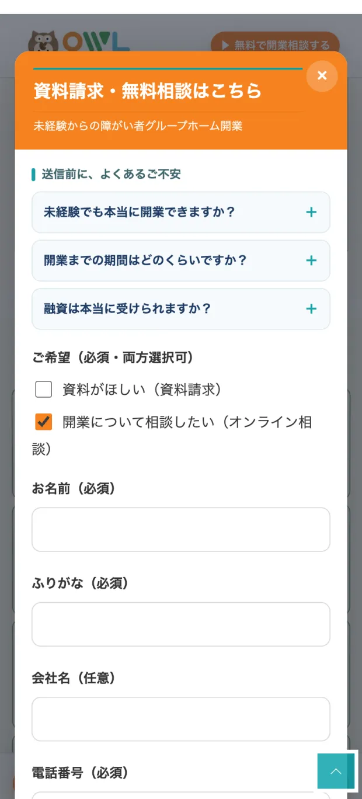
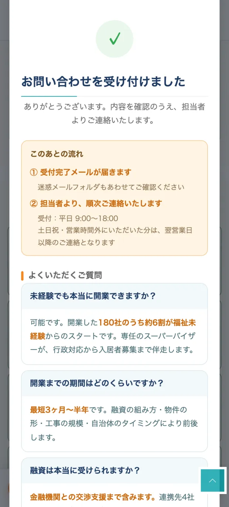

OWL福祉｜8月21日・22日に設定した内容
2026年8月23日／星崎
8月21日
独立LPのフォームを改善しました
| 送信の前 | フォームの上部に「よくあるご不安」3問を追加（初期は閉じた状態） |
| 送信の後 | 完了画面に「このあとの流れ」＋FAQ3問＋電話ボタンを追加 |
| 対象 | 独立LP 2本（500万版・300万版） |
| 触っていないもの | フォームの入力項目、0円プランLP |
資料請求くださった方が、送信したあとに6分かけてご自分でFAQを読み直していたため、その手当てです。スマホ360〜430pxで表示確認済み。

送信の前／フォームの上に3問。開かないと本文は出ないので、入力の邪魔にはなりません。

送信の後／受付完了と「このあとの流れ」、その下にFAQ3問と電話ボタン。
※どちらも実際の画面です（スマホ幅390px）。完了画面は表示だけさせて撮ったもので、テスト送信はしていません。
8月22日
キーワードを設定しました
① 独立（資料請求）に追加した9語 ※すべてフレーズ一致
不動産 福祉 投資福祉 起業介護 起業
福祉事業 起業福祉事業 独立介護事業 独立
福祉事業 開業脱サラ 福祉脱サラ 介護
主力の「起業 介護」の表示が落ちてきたため、入口を広げる目的で足しました。
初日の結果は表示19回・クリック1回で、検索需要が薄い語だったようです。1週間見て動かなければ整理します。
一方、元からある「起業 福祉」は232回表示（前日172回）と伸びていて、実質この1語が独立LPの入口を支えています。
② 除外から外した3語
助成金資格無料
開業を具体的に検討している人ほど使う言葉で、いちばん濃い層を落としていました。
とくに「資料請求は無料」と広告に書きながら「無料」を除外していた状態でした。
③ 除外に足した5語
グループホーム共同生活援助
起業 福祉起業 介護脱サラ
前2語は独立側のみ、後3語はGH側のみに設定。GH（0円プラン）と独立が同じ検索を食い合わないよう仕切りました。
④ 止めた1語（Yahoo）
障害者支援 事業 開業
3週間で¥10,897使って問い合わせ0。Google側では既に止めていた語でした。
LPを2件直しました
| 0円プランLP | 画像10枚をWebPに差し替え。ページ全体が 16.72MB → 3.98MB（76%減） |
| 独立LP（300万版） | FVの「自己資金300万円から」と本文の「500万円以上」の食い違いを解消 |
どちらも見た目は変えていません。画像の表示・フォームの動作・PC・スマホまで確認済みです。
※表示速度はブラウザの実転送量をこちらで計測した数字です。Googleの計測ツールが1日の上限で回せなかったため、スコアと表示秒数はあらためて取得します。
ご確認いただきたいこと
- 未経験の比率は「95%」ですか「約6割」ですか。LP内で食い違っています。
- 実績数は「400件」ですか「180社」ですか。同じく食い違っています。
- 独立LPの「自己資金300万」は、自己資金＋融資という理解で合っていますか。同じページに総投下資金¥370〜1,200万（融資活用時）と書いています。合っていれば文言を「自己資金として300万以上」に直したいです。
- 障がい者GH以外も支援対象ですか。就労継続支援・相談支援・放課後等デイの開業を調べている方が、3週間で248回表示されています。
- Yahooを続けますか。3週間で¥43,167を使って問い合わせ1件。クリック単価がGoogleの約1.9倍で、昨日は日予算¥5,000に対し¥8,526使っていました。
- 8/17〜8/20にいただいた4件は、その後いかがでしょうか。8/20午前の方は、送信後6分かけてご自分でFAQを読み直していました。